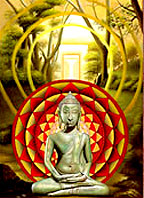
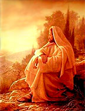
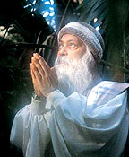

Considero maestros a aquellos seres que alcanzaron a ser sabios, o sea que
pusieron en práctica en sus propias vidas, todo aquello que pregonaron y
enseñaron. Por eso me infunden respeto, ya que nos transmiten su
conocimiento desde la experiencia concreta de vivir cada pensamiento, cada
palabra, cada meditación. Quiero compartir en este espacio la sabiduría de
algunos maestros que fueron y siguen siendo guías espirituales de muchos
seres en la Tierra.
Buda - Jesús - Osho
Maestro Buda

Gautama el Buda fue un príncipe hindú llamado Siddhārtha que significa “la
meta perfecta”, nació aproximadamente en el año 563 AC, al pie de los
montes Himalayas. El padre de Siddhārtha, era rey y gobernaba el clan de
los Śākya. Por este motivo Buda también es conocido como Sakyamuni que
significa el sabio entre el clan de los Sakya. Vivían a orillas del río
Ganges. Su madre se llamaba Maya Devi, era una de las esposas del rey ya
que su tradición permitía que el soberano tuviera más de una mujer y ella
murió en el nacimiento de Siddhartha quien fue criado por su tía.
Al poco tiempo de su nacimiento un gran sabio profetizó que Siddhartha
sería un gran maestro espiritual en el futuro, lo que consternó a
Śuddhodana, su padre, quién quería que su hijo siguiera sus mismos pasos y
que un día le sucediera en el trono. Es por esta razón que no permitió a su
hijo salir del palacio en su niñez y primera juventud, para que no viera
las miserias humanas y quisiera volcarse a lo religioso en servicio. Pensó
que el mejor modo de evitarle la tendencia a la religiosidad consistía en
impedirle toda experiencia con el lado amargo de la vida, de modo que creó
en torno a él una vida llena de placeres y con el menor contacto posible
con el ...sufrimiento.
Dice la leyenda que la madre del príncipe, fue fecundada por un pequeño y
bello elefante el que marcó con una pequeña herida delicadamente su regazo
sin causarle dolor. Cuando nació el pequeño Siddhārtha se presentó una
imagen frente a Maya de su hijo sobre un loto mientras una suave lluvia de
pétalos caía sobre ambos, y el le dijo: "Triunfaré sobre el nacimiento y la
muerte y venceré a todos los demonios que hostigan al humano." Hay otra
versión en la cual se menciona que la madre de Siddhartha soñó con el
elefante de seis cuernos, que bajaba del cielo y entraba en su vientre,
este sueño fue relatado a los sacerdotes que asistían al rey quienes
dijeron que ese niño sería santo y alcanzaría la sabiduría. También se
cuenta que ante el nacimiento de Gautama el Buda los enfermos curaron y los
discapacitados recuperaron sus capacidades. Los primera etapa de su vida el
príncipe estuvo sumergido en el mundo de ilusiones que su padre le brindaba
con placeres y abundancia total, lo cual lo mantenía lejos del mundo
espiritual. Pero Siddhartha estaba intrigado por lo que sucedía más allá de
los límites del palacio y pidió permiso a su padre quien le permitió ir
pero mando a sus súbditos a despejar las calles de todo aquello que no
fuera abundancia. Igualmente al salir y recorrer el príncipe las calles
pudo percibir en las miradas el dolor, pudo ver la enfermedad y la vejez, y
también pensar en la muerte.
Retornó al palacio con la idea de despedirse de su padre e ir a vivir la
vida fuera de las fronteras de su reino pero se casó y tuvo un hijo y esto
hizo que permaneciera más tiempo en el palacio. No dejaba de pensar en la
vida, la enfermedad, el sufrimiento y la muerte, sabiendo que él no estaba
ajeno a esas circunstancias. Pensaba que tendría que ser posible vivir en
paz y felicidad eternamente. A sus 29 años volvió a salir del palacio y
decidió quedarse en el pueblo viviendo unos años como mendigo.
Con la cabeza rapada y con vestiduras amarillas de itinerante, sin dinero
ni bienes de ninguna clase, deambulo en busca de la iluminación. En ese
tiempo el príncipe se topo con diferentes maestros que le transmitieron
técnicas de meditación y tuvo grandes logros, siempre con la tendencia de
buscar la liberación del ser. Llego al entendimiento que el aprendizaje es
individual y dentro de uno mismo entonces buscó un sitio, en donde se sentó
en meditación debajo de un árbol llamado Bodhi, considerado de gran
sabiduría. Decidió que estaría allí hasta haberse liberado. Luego de
cuarenta y nueve días de bardo dejó de lado la ilusión al darse cuenta que
su ser estaba más allá de la materia. Comprendió que nunca más volvería a
renacer, que había roto la rueda del samsara, de la reencarnación, volvió
de su estado meditativo como un buda o sea iluminado y despierto en
conciencia del ser. Murió a los 80 años de edad, en un bosque rodeado de
sus discípulos, sus últimas palabras fueron Nirvana Sutra.
Algunos de sus mensajes:
Así como la abeja liba en la flor, sin dañar su color y esencia, y luego se
aleja, así el sabio pasa por esta existencia.
El perfume de las flores no se propaga contra el viento, como tampoco la
fragancia de la madera del sándalo, del rododendro o del jazmín. Pero la
fragancia del virtuoso se esparce contra el viento. La del hombre virtuoso
se expande en todas las direcciones.
Aquel cuya mente es inestable, no conoce la enseñanza sublime, y aquel cuya
confianza vacila no alcanzará la sabiduría y la plenitud.
Aquel que bebe en la fuente de la enseñanza, vive felizmente con una mente
serena. El hombre sabio siempre goza de la enseñanza proclamada por los
nobles iluminados.
Como una sólida roca no se mueve con el viento, así el sabio permanece
imperturbado por la calumnia o el halago.
Sé una lámpara dentro de ti mismo, no busques autoridad externa.
Maestro Jesús

Nacido en Belén hace más de dos mil años, Jesús de Nazareth fue uno de los
profetas máximos de la Tierra. Sus padres biológicos fueron María y José,
quienes cuidaron de él en su infancia, adolescencia y primera juventud. La
información referente a su aparición en la Tierra está escrita solo en los
evangelios de Mateo y de Lucas. En el evangelio de Mateo relata que María
quedó inesperadamente embarazada luego de tener un contacto con un ángel
del cielo, un ángel de Dios, cosa que molesto mucho a José quien no creyó
en ella, hasta que se le apareció un ángel a él, en un sueño diciéndole que
el bebé que vendría al mundo era obra del Espíritu Santo. También este
ángel le dijo a José, que su hijo sería el Mesías que salvaría a su pueblo.
La llegada de Jesús fue profetizada por Juan el Bautista, por quién Jesús
fue bautizado luego en el río Jordán, durante el bautismo el Espíritu de
Dios bajo sobre Jesús en forma de paloma y se escucho la voz de Dios decir:
Este es mi muy amado Hijo, hoy lo he engendrado”.
Se dice que luego se retiró al desierto y estuvo allí por cuarenta días en
estado de ayuno para vencer todas las tentaciones del diablo.
Otros estudiosos como los Gnósticos afirman que el tiempo en que estuvo
alejado de su familia estudió y se formo con varios maestros tibetanos,
egipcios. Y que también en este transito logró la iluminación a través de
la alquimia sexual junto a su esposa y sacerdotisa María Magdalena. Luego
retorna a sus tierras y junto a sus apóstoles, seguidores fieles que ayudan
mientras aprenden del gran maestro Jesús, van peregrinando entregando el
mensaje de Dios, y haciendo muchas curaciones y milagros. Todo esto alteró
mucho al pueblo judío y romano, quienes finalmente le dieron muerte, esta
es una de las teorías, aunque algunos historiadores dicen que no era Jesús
quien estaba en la cruz. También están aquellos que dicen que si era Jesús
quien estaba en la cruz pero que lo lograron bajar aún con vida y que se
fue a la India donde tuvo muchos hijos y murió de anciano. Este es un tema
en el que es difícil opinar, a mi parecer todos deberíamos investigar si es
que nos interesa claro, y sacar nuestras propias conclusiones. Lo que si
podemos afirmar es que su mensaje fue de gran humildad, amor y paz. Se
sugiere la lectura del libro el quinto evangelio de Rudolf Steiner.
A continuación compartimos algunos de sus mensajes:
“Aquel que quiera salvar su vida, la perderá y todo el que pierda su vida a
causa de mi la hallará.”
“Ámense los unos a los otros. Ustedes deben amarse los unos a los otros
como yo los he amado. En esto reconocerán todos que son mis discípulos”.
“Bienaventurados los pobres de espíritu: porque de ellos es el reino de los
cielos''.
''Bienaventurados los mansos: porque ellos poseerán la tierra''.
''Bienaventurados los que lloran: porque ellos serán consolados''.
''Bienaventurados los que tienen hambre y sed de justicia: porque ellos
serán saciados''.
''Bienaventurados los misericordiosos: porque ellos obtendrán
misericordia''.
''Bienaventurados los limpios de corazón: porque ellos verán a Dios''.
''Bienaventurados los pacíficos: porque ellos serán llamados hijos de
Dios''.
''Bienaventurados los que sufren persecución por la justicia, pues de ellos
es el reino de los cielos''.
Maestro Osho

El maestro Osho nació el 11 de diciembre de 1931 y murió el 19 de enero de
1990. Fue un gran maestro espiritual hindú, uno de los seres que ha
cambiado trascendentalmente la vida en la India y en la actualidad a través
de sus mensajes, conferencias y meditaciones ayuda a cambiar a muchos seres
humanos sobre toda la Tierra. También es conocido por el nombre de
Rajneesh, vivió gran parte de su vida en India y otra parte en Estados
Unidos de Norte América. Osho decía que su trabajo ayudaba a crear las
condiciones para el nacimiento de un nuevo tipo de ser humano capaz de
disfrutar y celebrar la vida. En sociedades donde tantas visiones
religiosas e ideológicas tradicionales parecen irremediablemente pasadas de
moda, la singularidad de Osho consiste en que no nos brinda soluciones sino
herramientas para ser encontradas por uno mismo. Osho nos brinda
herramientas para hacer un trabajo consciente sobre uno mismo para lograr
el estado de iluminación espiritual. Si bien en sus conferencias sita a
grandes maestros del tiempo, basa su transmisión de conocimientos desde la
experiencia propia, principio que a mi visión habla realmente de un gran
maestro. Desarrollo muchas técnicas de meditación para que los seres
humanos logren trascender la identificación con el Ego, desechando las
proyecciones falsas que la mente emite durante el proceso de iluminación.
Transcribo en esta página parte de su gran enseñanza y hago presente mi
agradecimiento a tanta iluminación y amor de su parte.
Del libro Amor de Osho
¿Cuáles son los síntomas de estar en amor?
Tres cosas
Primero absoluto contento, nada más se necesita, ni siquiera Dios se
necesita.
Segundo este mismo momento de amor es eternidad, no hay mañana, el amor
está sucediendo en el presente.
Y tercero cesas de ser tu, tu no eres más, si aún eres todavía no has
entrado al templo del amor.
El tiempo es irrelevante para el amor….
El amor no es un acto, no es algo que haces. Si lo haces no es amor. No hay
ningún hacer que esté involucrado en el amor. Es un estado de ser, no un
acto.
Ama sin ninguna razón, ama por la pura alegría de amar, ama porque
solamente amando serás capaz de conocer de que se trata toda esta
existencia, esta vida, este milagroso universo que te rodea.
La relación es uno de los misterios y dado que existe entre dos personas,
depende de ambos. Allí donde dos personas se encuentran, un nuevo mundo es
creado. Por el solo hecho de su encuentro, llega a la existencia un
fenómeno nuevo que no ha existido antes. Y a través de este nuevo fenómeno,
ambas personas cambian y se transforman.
Encontrar a una persona en su centro es pasar tú mismo por una revolución,
porque si quieres encontrar a una persona en su centro, tendrás que
permitir que esa persona llegue también a tu centro. Puedes permitir que
alguien entre en tu centro solo cuando no tienes miedo, por lo que hay dos
maneras de vivir: orientado hacia el miedo u orientado hacia el amor. La
persona orientada hacia el amor es alguien que no tiene miedo del futuro,
alguien que no tiene miedo del resultado y la consecuencia, alguien que
vive el Aquí y Ahora.
Eso es lo que Krishna le dice a Arjona en el Gita: No te preocupes por los
resultados, esa es la mente orientada al miedo, no pienses en lo que
sucederá a consecuencia de lo que hagas. Permanece aquí, nada más y actúa
totalmente, no calcules. Un ser orientado hacia el miedo esta siempre
calculando, planeando, haciendo arreglos, poniéndose a salvo. Toda su vida
se pierde de esa manera.
Si puedes estar en este momento, este momento presente, esta plenitud, sólo
entonces puedes amar.
Si puedes permitir que el amor suceda, entonces no hay necesidad de
plegaria, no hay necesidad de meditaciones, no hay necesidad de ninguna
iglesia, de ningún templo. Si puedes amar puedes olvidarte completamente de
Dios, porque a través del amor todo te habrá sucedido: la meditación, la
plegaria, Dios, todo te habrá sucedido.
Fragmento del libro Amor de Osho, editorial Luz de luna.